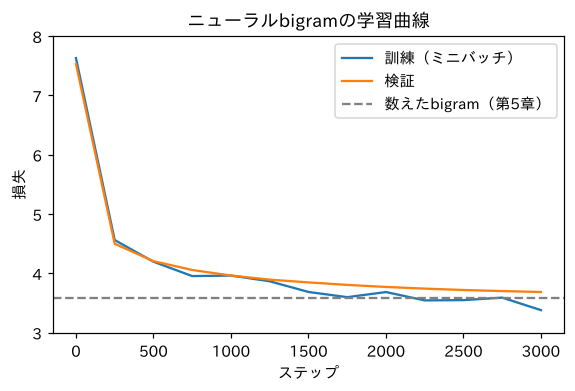

第2部 ゼロから作る · 第8章
数えずに学ぶ：ニューラルbigram
確率の表を勾配降下法で「学習」させたら、数えた答えに近づいていった
おすすめは「ページを読みながら、コードを自分のノートブックに1セルずつ貼って実行」。完成ノートは困ったときの答え合わせ用です。
つくるもの
bigramの確率表を、数えるのではなく勾配降下法で学習するニューラルネットワーク（最小のニューラル言語モデル）
ついでに身につく理論
- ロジットの表＝パラメータ
- 交差エントロピー損失（
F.cross_entropy） - ミニバッチ確率的勾配降下法（SGD）
- 最尤推定：損失最小化は「数える」と同じ答えになる
- 学習曲線の読み方
- 正則化とスムージングの関係
新しく使うPython
torch.randintでランダムに選ぶtorch.Generatorで乱数を固定F.cross_entropyW.grad = None

ミナト
数えれば一瞬で答えが出るのに、わざわざ学習させる意味あるんですか？

ボンゴ先生
鋭い。この章のモデルだけ見れば、意味はない。でも、「数える」は直前の文字が1つのときしか使えない。直前10文字を見たいときは数えられない（第4章の組み合わせ爆発）。でも「学習」なら、どんなに複雑なモデルにも使える。今日は、答えが分かっている問題で、学習という方法が本当に正しい答えにたどり着くかを確かめるんだ。答え合わせ付きの練習問題だね。
準備
準備セルに、今回は文字⇔番号の変換と、データのテンソル化も入れておきます。
import re, math, urllib.request
import torch
import torch.nn.functional as F
def load_soseki(file_id="773_ruby_5968"):
url = ("https://raw.githubusercontent.com/aozorahack/aozorabunko_text/master/"
f"cards/000148/files/{file_id}/{file_id}.txt")
text = urllib.request.urlopen(url).read().decode("cp932")
text = text.split("-------------------------------------------------------")[2]
text = text.split("底本：")[0]
text = re.sub(r"《.*?》", "", text)
text = re.sub(r"※?［＃.*?］", "", text)
text = text.replace("｜", "").replace("\r\n", "\n")
text = re.sub(r"\n{3,}", "\n\n", text)
return text.strip()
text = load_soseki()
chars = sorted(set(text))
V = len(chars)
stoi = {ch: i for i, ch in enumerate(chars)}
itos = {i: ch for ch, i in stoi.items()}
data = torch.tensor([stoi[c] for c in text])
n = int(len(data) * 0.9)
train_data, val_data = data[:n], data[n:]
print(V, train_data.shape, val_data.shape)2061 torch.Size([146220]) torch.Size([16247])今度は文章全体を数字のテンソルにしてしまいました。ここからは、文字ではなく番号で考えます。
xs, ys = train_data[:-1], train_data[1:] # 入力（今の文字）と正解（次の文字）
vxs, vys = val_data[:-1], val_data[1:]
print("入力：", xs[:8].tolist())
print("正解：", ys[:8].tolist())
print("文字で見ると：", [itos[i] for i in xs[:8].tolist()], "→", [itos[i] for i in ys[:8].tolist()])入力： [138, 3, 263, 1272, 45, 1375, 0, 0]
正解： [3, 263, 1272, 45, 1375, 0, 0, 132]
文字で見ると： ['上', '\u3000', '先', '生', 'と', '私', '\n', '\n'] → ['\u3000', '先', '生', 'と', '私', '\n', '\n', '一']入力と正解が、1文字ずつずれて並んでいます。「上 の次は （全角空白）」「先 の次は 生」……。これが、言語モデルの 教師データ です。問題（入力）と答え（正解）の組が14万個以上あります。
モデル：中身がでたらめな表
第6章の確率の表 P の代わりに、点数（ロジット）の表 W を用意します。中身は最初、全部0です。
W = torch.zeros((V, V), requires_grad=True)
print(W.shape, "パラメータの数：", W.numel())torch.Size([2061, 2061]) パラメータの数： 4247721使い方は第6章と同じです。今の文字の番号で行を取り出せば、それが「次の文字の点数」。第3章のsoftmaxで確率にします。
x = torch.tensor([stoi["先"]])
logits = W[x] # 「先」の行＝次の文字の点数（ロジット）
probs = F.softmax(logits, dim=1)
print(logits.shape, probs.shape)
print("「生」の確率：", probs[0, stoi["生"]].item(), " ＝ 1/V：", 1 / V)torch.Size([1, 2061]) torch.Size([1, 2061])
「生」の確率： 0.0004852013662457466 ＝ 1/V： 0.00048520135856380397点数が全部0なので、softmaxするとどの文字も同じ確率 になります。何も知らない、まっさらな状態です。
損失：交差エントロピー
第5章の損失（正解の確率の の平均）を、テンソルで計算してみます。
def loss_by_hand(W, x, y):
logits = W[x]
probs = F.softmax(logits, dim=1)
p_correct = probs[torch.arange(len(y)), y] # 各行の「正解の文字」の確率
return -p_correct.log().mean()
print("手作りの損失：", loss_by_hand(W, xs[:1000], ys[:1000]).item())
print("F.cross_entropy：", F.cross_entropy(W[xs[:1000]], ys[:1000]).item())
print("log V：", math.log(V))手作りの損失： 7.630945205688477
F.cross_entropy： 7.630943775177002
log V： 7.630946580890459学習：ミニバッチで坂を下る
いよいよ学習です。14万個の問題を毎回全部解くと時間がかかるので、毎回ランダムに1024問だけ選んで損失を計算し、坂を下ります。
g = torch.Generator().manual_seed(0)
W = torch.zeros((V, V), requires_grad=True)
lr = 50
history = []
for step in range(3001):
ix = torch.randint(0, len(xs), (1024,), generator=g) # ランダムに1024問選ぶ
loss = F.cross_entropy(W[xs[ix]], ys[ix]) # ① 損失
W.grad = None # （勾配をリセット）
loss.backward() # ② 勾配
with torch.no_grad():
W -= lr * W.grad # ③ 更新
if step % 250 == 0:
with torch.no_grad():
val_loss = F.cross_entropy(W[vxs], vys).item()
history.append((step, loss.item(), val_loss))
if step % 500 == 0:
print(f"ステップ {step:4d}：訓練 {loss.item():.3f} 検証 {val_loss:.3f}")ステップ 0：訓練 7.631 検証 7.531
ステップ 500：訓練 4.196 検証 4.206
ステップ 1000：訓練 3.963 検証 3.963
ステップ 1500：訓練 3.686 検証 3.847
ステップ 2000：訓練 3.685 検証 3.771
ステップ 2500：訓練 3.548 検証 3.719
ステップ 3000：訓練 3.379 検証 3.685CPUだと1〜2分かかります。損失がどんどん下がっていきます！ 7.63（まっさら）から、3.7あたりまで来ました。
学習曲線を描く
損失の変化をグラフにしたものを 学習曲線 と呼びます。学習がうまくいっているかを診断する、健康診断書のようなものです。
!pip install -q matplotlib-fontjaimport matplotlib.pyplot as plt
import matplotlib_fontja
steps = [h[0] for h in history]
plt.figure(figsize=(6, 3.5))
plt.plot(steps, [h[1] for h in history], label="訓練（ミニバッチ）")
plt.plot(steps, [h[2] for h in history], label="検証")
plt.axhline(3.581, color="gray", linestyle="--", label="数えたbigram（第5章）")
plt.xlabel("ステップ")
plt.ylabel("損失")
plt.ylim(3, 8)
plt.legend()
plt.title("ニューラルbigramの学習曲線")
plt.show()
検証損失は、灰色の点線（第5章で数えたbigramの3.581）に向かって、ゆっくり近づいています。
学習した表の中身を見る
学習した W が、本当に「数えた答え」に似ているか確かめましょう。
with torch.no_grad():
p = F.softmax(W[stoi["先"]], dim=0)
top = torch.topk(p, 5)
print("学習したモデル：「先」の次は…")
for prob_, i in zip(top.values, top.indices):
print(f" {itos[i.item()]!r} {prob_.item():.3f}")学習したモデル：「先」の次は…
'生' 0.895
'へ' 0.026
'刻' 0.020
'で' 0.012
'に' 0.004数えたときは「生」が0.88でした（第4章）。学習では0.895。誰にも「数えろ」とは教えていないのに、損失を小さくしようと坂を下っただけで、数えた答えにたどり着いたのです。
生成してみる
g = torch.Generator().manual_seed(1)
ix = stoi["私"]
out = ["私"]
with torch.no_grad():
for _ in range(60):
p = F.softmax(W[ix], dim=0)
ix = torch.multinomial(p, 1, generator=g).item()
out.append(itos[ix])
print("".join(out))私はかえってに、それは、ないの奥さんにした。先生の頭に私の…数えたbigramと同じくらいの「なんとなく漱石」です。それもそのはず、中身がほぼ同じ表なのですから。
記録表
| モデル | 章 | 検証データの損失 |
|---|---|---|
| でたらめ（一様分布） | 5 | 7.631 |
| bigram（数える、k=0.01） | 5 | 3.581 |
| ニューラルbigram（SGD 3000ステップ） | 8 | 3.685 |
ニューラル版はまだ数えた版に追いついていません。ステップ数を増やせば近づきますが、同じ「直前1文字だけ」の情報しか使っていない以上、数えた版を大きく超えることはできません。超えるには、モデルにもっと前の文字を見せる必要があります。次の章でやりましょう。
クイズ 1：初期の損失
語彙が100文字のモデルを、ロジットが全部0の状態から学習を始めました。最初の損失はいくつになるはず？
答えを見る（まず自分で考えてから！）
です。全部の文字の確率が なので、正解の確率も 、その は 。最初の損失が から大きくずれていたら、初期化がおかしいサインです（第10章）。
クイズ 2：最尤推定
ニューラルbigramを十分長く学習させると、確率の表はどんな値に近づく？
答えを見る（まず自分で考えてから！）
訓練データで数えた割合（頻度）に近づきます。交差エントロピーを最小にする確率は、数えた割合と一致する（最尤推定）からです。
できたらチェック
ボンゴ先生
いよいよ次は、本物のニューラルネットワークだ。直前の何文字もを見て、次の文字を予想する。そのために、文字を「数の組」で表す 埋め込み という魔法を使う。「先生」と「教授」が似ていることを、モデルが自分で見つけ出すようになる。
押すと目次にチェックが付きます（この端末のブラウザにだけ保存）。